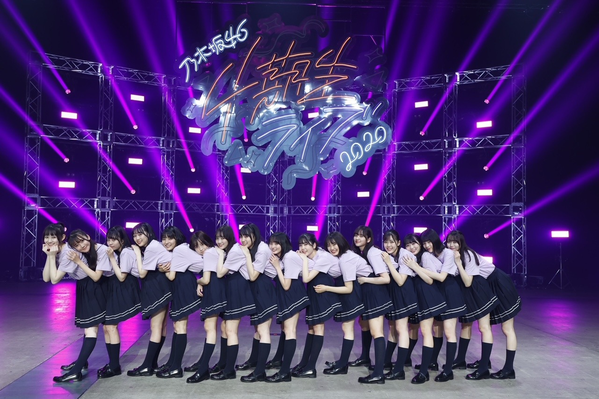

2020/1209Wed私はまだ何もと言うから 。佐藤璃果
こんにちは
乃木坂46 4期生 岩手県出身
佐藤璃果です。


みんなと同じような写真ですが
大事な写真なので！
乃木坂46 4期生ライブ2020
ありがとうございました！︎︎☺︎
私はこのライブに全力で挑んだと
言えることが嬉しいです。
もちろんダンスも歌もまだまだです。
こんなに短期間で色んな曲や
演出を覚えたりするのは初めてと
言っても過言ではありませんでした。
4期のみんなは出来るのに
私たちは出来ないことが多くて、
同じ4期生として
ステージに立たせて頂くのに、
出来ない自分がもどかしくて。
ずっと必死でした。
16人はみんな本当に個性豊かで、
みんながキラキラしていて、眩しくて
その光の中に私は入れているのか、
4期のみんなに何も出来ていなくて申し訳ないなという感情でした。
11人での4期生は
もうすごくキラキラしていて
私たち5人が入ってから
もっとキラキラが増したと
言っていただけるように、
これからまた一つ一つ積み重ねていきたいです！
皆さん、
これからもよろしくお願いしますね！
最後のパジャマでの
16人でのわちゃわちゃ感を見ていたら
ああ、ずっとこの平和な時間が続いてくれればいいのにな
と思いました。
そういうのも含めての
リハでの涙です。
実は本番もステージ袖で泣いてしまうことはあったんですけどね。内緒ですよ内緒
マネージャーさんに助けて頂きました。
感謝です❄️
~~~~~~~~~~~~~~~~~
ユニットコーナーは、
｢白米様｣を
❁まゆたん、矢久保ちゃん、ゆりちゃん❁と
一緒にパフォーマンスさせて頂きました。
私はリハの時、
まゆたんが矢久保ちゃんの事を
本当に可愛いねぇって褒めていて、
それに対して矢久保ちゃんが
テレたり謙遜したり、
ゆりちゃんが、何かをした後に、
ごめんね、ありがとーう。
と言ってくれる
優しい空間が大好きで、ほんの少しの
ユニットコーナーだったのに
このメンツが大好きになりました。
まゆたん、
お洋服とご飯待ってます♡
みんなと歌えて幸せでした！

~~~~~~~~~~~~~~~~

両耳かけゆる巻でした
私はね、白米様から4番目の光の衣装に
着替えている時
リハでも本番でも物凄く感情が動いて、
どうしようって思っていたのですが、
この衣装、なんと西野さんの衣装でした、
加入前から大好きな西野七瀬さんの
衣装でパワー頂きました。
今回こういった状況でのライブで、
皆さんに元気を直接ではなく配信ライブという形でも元気を届けられるという事の
ひとつの証明になればと思います。
16人の大事なメンバー、
沢山支えてくださったマネージャーさん、
ずっと遅くまで頑張ってくださったスタッフさん全ての方に感謝です。
ありがとうございます！！( ¨̮ )
~~~~~~~~~~~~~~~~
4期生楽曲
｢Out of the blue｣
せいらちゃんがセンターです！
せいらちゃんは本当に私達が入りたての頃から気にかけてくれていました。
隣に来て話しかけてくれたり、
色々心配してくれたり、
そんなせいらちゃんが大好きです。
沢山振りの動画を撮らせて貰っちゃって
自分自身の事でもきっと大変だったのに、
快く受け入れてくれてありがとう。
初めて頂いた16人での楽曲、
磨いて磨いてもっといいパフォーマンスをしていけるようにこれからも大事にしていきます。
私はレイちゃんとシンメで
さやか(ちゃん)の隣です！
周りを沢山見て色々な事を吸収出来ればと思います。
｢Out of the blue｣の歌詞も大好きですし、
振り付けも可愛らしくて好きです。
初めての自分の歌割りがあることに感動しました。
皆さんが好きな所も沢山教えて下さい！
素敵な曲を歌わせて頂けることに感謝です。
沢山の方に届きますように。
｢Out of the blue｣
の意味、調べました？私は調べました( ˙º˙ )
❁
4期生ライブ2020
4期生全員が1番輝いていました。
全員がナンバーワンですよね
永遠に記憶に残るライブになりましたか？
私はなりましたよ。
温かいコメントもありがとうございます。
~~~~~~~~~~~~~~~~~~~
明日はるなぴです。
本当本当にお疲れ様！
~~~~~~~~~~~~~~~~~~
皆さんにとって
素敵な1日になりますように。

またね。
#46 りか

PROFILE
新4期生リレー
202104
| SUN | MON | TUE | WED | THU | FRI | SAT |
|---|---|---|---|---|---|---|
| 1 | 2 | 3 | ||||
| 4 | 5 | 6 | 7 | 8 | 9 | 10 |
| 11 | 12 | 13 | 14 | 15 | 16 | 17 |
| 18 | 19 | 20 | 21 | 22 | 23 | 24 |
| 25 | 26 | 27 | 28 | 29 | 30 | |

コメント(333)
まず、4期生ライブおつかれさま！
4期生それぞれが輝いてて本当に良いライブだったと思います！！
ユニット曲の白米様もすごく良かった！
同い年のゆりちゃんとの絡みもすごく嬉しかった！
アフター配信のパジャマ姿もすごく可愛かったよー！
ミーグリで会えるのがもっと楽しみになりました！
これからもずっと応援してます！！
ゆっちゃんより。
まず、4期生ライブおつかれさま！
4期生それぞれが輝いてて本当に良いライブだったと思います！！
ユニット曲の白米様もすごく良かった！
同い年のゆりちゃんとの絡みもすごく嬉しかった！
アフター配信のパジャマ姿もすごく可愛かったよー！
ミーグリで会えるのがもっと楽しみになりました！
これからもずっと応援してます！！
ゆっちゃんより。
ー質問ー
・最近見た夢ってなに？
・呼ばれたいあだ名ってあるかな？
・写真集を発売するならどこで撮影したい？
・質問というかお願い！メガネをかけた姿も見てみたいな！
ありがとう！次回も楽しみにしているよ。
４期生ライブ観たよー！観てて楽しかった！
りかちゃんもすごく良かったよ！
次のライブはいつになるんかなあ
4期生ライブお疲れ様でした♡♡♡♡♡♡♡♡♡♡♡♡♡♡♡♡♡♡♡りかちゃんの可愛さが限界突破してたよ♡♡♡♡♡♡♡♡♡♡♡♡♡世界でいっちばん佐藤璃果ちゃんがだーーーーーーーーーーいちゅきだよっ！！♡♡♡♡♡♡♡♡♡♡♡♡♡チュチュチュチュチゥゥゥウウウウ♡♡♡♡♡♡♡♡♡♡♡♡
早くミーグリでりかちゃんに会いたいな♡♡♡♡♡♡♡♡♡♡♡♡♡♡
またブログ更新楽しみにしてます♡♡♡♡♡♡またね♡♡♡♡♡♡♡♡
レコメン聴きました！4期生のって言ってて嬉しかったです^ ^
ライブお疲れ様！！良いライブだったね。また次に開催されるライブ楽しみにしているよ！
ー質問ー
・最近見た夢ってなに？
・呼ばれたいあだ名ってあるかな？
・写真集を発売するならどこで撮影したい？
・質問というかお願い！メガネをかけた姿も見てみたいな！
ありがとう！次回も楽しみにしているよ。
4期生のみんながもっともっと世間に知ってもらいたいなぁって思ったよー！ほんとにおめでたでしたー！あ、あと、りかちゃんミーグリおめでとう！めちゃとったから楽しみにしててね！
僕も話すの楽しみやなー。今から、なんの話する
か考えとくね。笑笑
寒いし、体調崩しやすいけど、元気で頑張って
ね！
じゃあ、また、５日後だったよね？
ブログ更新まで、待ってるね！
じゃあ、また、りかちゃんちゃん！笑笑
ミーグリーーーーー！
璃果ちゃんブログ更新ありがとう〜！
まずは4期生ライブお疲れ様〜！先週はこのライブのために頑張ったって言っても過言じゃなかったんやけど、実際に2時間があっと感じるぐらい凄かったです！！
始まってしばらく踊り続けたりしててほんとすごいな。って感情が湧いてきて、途中からは一瞬一瞬が大切やから目に焼き付けな！って思ってみてました笑
ユニット曲の白米様、めっちゃ可愛かったよ〜！ライブが終わったすぐにまた見たくなったんよね笑
僕は、感情が揺さぶられるってめっちゃいい状況とか状態じゃないと起きないと思ってて、璃果ちゃんはこのライブで多くの場面で感情が動かされる時があったんやと思うけど、その時間を少しでも共有できたって思えるだけで僕は嬉しいです！
自分でも何言ってるか分からんのやけど、今度のミーグリで感想とか伝えたいな！って思います！
んじゃもうここから年末まで早く感じそうやけど、こっからまた頑張っていこー
4期生ライブほんとに感動しました。
璃果ちゃんも沢山映ってて嬉しかったです！
画面越しだったけどレスありがとう(╥﹏╥)
質問です☺︎
◎ 璃果ちゃんは早着替え上手ですか??
◎ 4期生ライブの楽屋は誰のお隣でしたか??
◎ 璃果ちゃんが冬だなぁと思う瞬間はなんですか??
◎ BRODYさんの璃果ちゃんチェキが当選したのですがいい保管方法ありますか??
あとどこに飾るかも悩んでます（ ; ; ）
アイディアください！！！
璃果ちゃんが今日もいちばんかわいいです(⸝⸝o̴̶̷᷄ ·̭ o̴̶̷̥᷅⸝⸝)
まなより
何この目だけ写ってる、飛鳥スタイル写真？(*´ω｀*)♡（笑）好き♡
そして4期生ライブお疲れさまでした＼(^o^)／ほんっとうに楽しかったよ
最後のパジャマ配信は本当に素すぎて楽しすぎたよ
この普通のわちゃわちゃいちゃいちゃふざけてる時間は永遠に続いてほしかったなあ(｡>﹏<｡)
白米様は凄く可愛くて良かったよ＼(^o^)／
皆めちゃ似合うなあ(*´ω｀*)♡♡♡
いつかなな本人と会えたら良いよね(｡>﹏<｡)
新曲Out of the blueは本当に良いね
早く歌番組とか乃木中スタジオとかまたとこかで披露してほしいなあ(*´ω｀*)
私は英語できるから調べる必要はない！( ･´ｰ･｀)どや（笑）
改めて4期生ライブは本当に最高だった＼(^o^)／
4期生の絆も最高だよ＼(^o^)／♪
これからも頑張って(/･ω･)/
ブログ更新、ありがとう！
4期生ライブ、お疲れ様でした！
とってもいいライブでした！4期生、一人ひとりが輝いていた、輝けるような素敵なものだったなと思います。
たくさんの出番があって大変だったとは思いますが、その分たくさん璃果ちゃんを見ることが出来て嬉しかったです。
ありがとう。
白米様は可愛かったし、パジャマトークは微笑ましすぎました。
こちらも、ずっと見ていたいなと思いました。
本当にお疲れ様でした！
ミーグリ、璃果ちゃんと話せることに今から緊張していますが、
楽しみにしてます！
またの更新、楽しみにしてます！またね！
4期生ライブお疲れ様でした！
16人では初となる4期生ライブ、スタートから泣きっぱなし
でした。ついに揃ったんだと。4期生のスタートはここからだ！
と強く感じました。
白米様可愛かったです！！かわいいの渋滞！幸せ空間です！
りかちゃんの言う通り4期生全員が輝いてました。
全員がナンバーワンです！
新曲のOut of the blue 良い曲でした！
振り付けもキュートです！もう一度聴きたいです。
リハーサルでの涙の理由を聞いてこちらもまた泣きそうです。
またいつか、4期生ライブが開催される事を願っています。
その時はぜひ、会場で応援させてください。
ずっとずっと大好きです！それでは、また！
璃果ちゃんの額縁衣装が個人的に優勝すぎたのですが璃果ちゃんが着れて嬉しかった衣装はありますか??
また、璃果ちゃんが着たい！！って思った衣装はありますか??
まなより
ライブお疲れ様〜
4期集合
最高だね
またやれますように〜
大切な写真ありがとう。
4期生ライブ見たよ！もうめちゃくちゃほんとに楽しかった！
最初のOVERTUREから鳥肌えぐかった笑
璃果ちゃん達はほとんどが初披露の曲なのに、そんなの全く思わせないパフォーマンスだったよ！
歌もダンスもみんなすごく良かった！
僕はこのライブを見て璃果ちゃんたち5人が4期生として入ってきてくれてほんとに良かったと思ったよ。
何もかもが乃木坂にとってプラスになってる。
ライブのMCで璃果ちゃんが前日リハで泣いたって聞いた時は、璃果ちゃんらしい謙虚な理由だなって感じたけど、僕は璃果ちゃんが乃木坂に入ってくれて感謝しかないよ。
ライブの内容とかセトリとかもすごい良かったよね。
ユニットの白米様めっちゃ良かった！
さゆりんご軍団とはまた違った雰囲気でいつもと違う楽しみ方ができたよ！
1番初めに歌った君の名は希望。みんなが希望なんだなって感じた。
配信だったから璃果ちゃんのこといっぱい見つけられたよ！
ライブでたくさんパフォーマンスしてるのを見るのはこれが初めてだったから、どんな姿の璃果ちゃんを見てても嬉しかった。
新曲も最高だったね。曲も歌詞もいいし、振り付けもめっちゃ癖になる笑
みんな最高でした。
璃果ちゃんにとっても素敵な1日になりますように。
またブログ更新楽しみにしてます！
(=ﾟωﾟ)ﾉﾎﾅ､ﾏﾀ!!
大好きやで
来年ミーグリ絶対行くから待っててね‼︎
4期生ライブお疲れ様でした！璃果ちゃん、4期生のみんなが輝いていました。
白米様の衣装も髪型も可愛かったです！
"Out of the blue" も良い曲でした。16人の歌とても嬉しいです！
4期生ライブおつかれ！
めっちゃ良かったです
今回は16人での4期生ライブだったので
より新鮮なライブでした
これからも頑張ってください！
応援してます！
とっても楽しい時間で
あっという間に感じ
ました。
それだけ楽しく幸せな
時間だったんだなと
思います。
Out of the blue
大好きな曲に
なりました。
これぞアイドル。
私は最も望んでいる
事です。
様々な色の曲がありそれぞれ
に素晴らしい個性があります。
しかし私は元気になり
笑顔になりたいです。
これは簡単なようでとても
難しい事です。
璃果さんは二列目ですね。
すごい。
沢山見れました:)
幸せな時間をありがとう
ございました。
パジャマとっても
かわいかったな。
似合ってましたよ<3
4期ライブお疲れ様でした！！とてもいいライブでした。友達と見てたんだけどすごく盛り上がってた笑笑七瀬さんの衣装だったんだね！！！すごい！！！！（語彙力皆無）笑
とてもいいライブありがとうね。
ブログ更新ありがとうございました
4期生ライブの感想もありがとうございました
両耳かけゆる巻きの写真
超絶可愛くないですか
ほんまに璃果ちゃんはかわゆいな
短期間のリハの割に
完璧なダンスだったと俺は思います
璃果ちゃんのパフォーマンス
まだ目に焼き付いています
4期生の16人はマジに個性的だけど
すごく魅力に溢れている女性達です
だから4期は好きだし推しがいあります
ユニットコーナーの皆んなの写真も嬉しいです
*･゜ﾟ･*:.｡..｡.:*･'(*ﾟ▽ﾟ*)'･*:.｡. .｡.:*･゜ﾟ･*
璃果ちゃん
なーちゃんの衣装着たの？
俺の大好きななーちゃんの？
めちゃくちゃ嬉しい
なーちゃんの衣装を璃果ちゃんが
こんな夢みたいな話があったんだね
ストーリーは続くね
なーちゃんから璃果ちゃんへ続く
乃木坂の遺伝子 最高かよ (*´꒳`*)
Out of the blueの意味調べました
突然なんだ
突然と言えば
璃果ちゃんが俺の心を突然に奪って
いきましたね
璃果ちゃんという素晴らしい女性に
逢えて幸せ過ぎます
璃果ちゃんが凄く大好きです
いつもブログ楽しみにしています！
今回もとても良かったよ！
また楽しみにしてるね！
ライブでのりかちゃんの歌とダンスが最高だったよ
白米様の衣装を着たりかちゃんも特典のパジャマのりかちゃんも可愛くて、私もその時間がずっと続いてほしいと思ってた
ライブで初披露したOut of the Blueって新曲も神すぎて、すぐ好きになったし、ライブの日から毎日3-4回くらいは聞いてます
そういえば、今回のブログがりかちゃんの46回目のブログなんだね
46回目のブログおめでとう (笑)
じゃ、またね
ライブお疲れ様、凄くいいライブだったよ、璃果ちゃんのゆるふわ可愛い、白米様のツインも可愛い
質問
最近新しい仕事が始まって毎日バタバタです。
べ、べつに、、泣いてねぇし、、
アウトオブザブルーは2列目おめでとう！！
見られる位置だからこそ気を抜かずに頑張ってね！
本当は俺は人に頑張れって言うのは嫌いです。
だって、頑張らない人なんていないから。
でも、それでも、少しでもりかちゃんの応援になればとおもって言います。これからも頑張ってください。
質問です！！
りかちゃんはわんこそば何杯食べた事ありますか？
チャァオ〜〜〜!☆彡
りかちゃん、４期生ライブお疲れ様でした〜〜❕❤️❤️❤️❤️❤️笑顔
いっぱい楽しめましたかああ〜〜〜❕❔❤️❤️❤️❤️❤️笑顔
いい〜〜思い出がいっぱいできて〜
また自信がついたと思います❕❤️❤️❤️❤️❤️笑顔
・・❕笑顔
りかちゃんの写メ〜〜〜⤴️⤴️⤴️
頬っぺとお目目がとっても可愛いいい〜〜⤴️⤴️⤴️ですよ〜〜〜⤴️⤴️⤴️❕❤️❤️❤️❤️❤️笑顔
(＠＾▽゜＠）ゞ❤️❤️❤️
❇️❇️おすまし！⚜️❇️⭐彡
まずは4期生ライブお疲れ様！
みんな1番輝いてて記憶に一生残るライブだったよ！！
どの衣装も似合ってた！パジャマもね( ¨̮ )
アフター配信の時持ってたぬいぐるみなにー？？
気になって夜しか眠れないよ！笑
あ、そーいえばミーグリ取ったよ！
たくさん取ったからいっぱい話せる！楽しみ！！
また5日後のブログたのしみにしてますଘ(੭ˊ꒳ˋ)੭✧
今日もお疲れ様です、ブログ更新ありがとう。
4期生ライブお疲れ様！都合があって観られなかったけど、色んな人たちやニュースサイトとかでレポを観て、素晴らしいライブになったんだなぁと知りました。去年の坂道研修生ツアー以来、会場で璃果ちゃんのパフォーマンスを観ることが出来てないことも改めて思い出してかなりショックを受けております笑
璃果ちゃん不足かね〜〜。会場で観たかったな〜。。
そろそろクリスマスだね！今年はあんまり出歩けないから今までみたいな過ごし方は出来ないけど、できる限り楽しく過ごしたいもんです。
璃果ちゃんはクリスマスどう過ごす予定ですか？？？
ぼくはサンタのコスプレしながらケーキ売る予定です。寂しいからケーキ買いに来てねー笑
小説の続きが気になるので、今日はこの辺で。
璃果ちゃんにとって、良い1日になりますように。
そんじゃ、また！！
乃木坂の事をより好きになったし。4期生の事ももっともっと好きになりました。
同じ岩手出身として応援してます。
ノギザカスキッツの予告編見たよ、チョンサム姿を楽しみにしています！もうちょっとドキドキしてきたwww
4期生ライブは本当によくできたよ、楽しく観ていました。
質問：チョンサムといえば、中国ではいつ頃から流行っていたのでしょうか？
この一年はあっという間に過ぎちゃいましたな。これからも頑張ってね！！
ライブお疲れ様！！4期生だけのライブ本当に頑張ったと思うし、ライブでの璃果ちゃんは1番輝いていてとっても可愛かったです！！
これから有客ライブができるようになったら、直接璃果ちゃんが歌っている所が見られると思うとすっごく楽しみ！！
最近あまりコメント出来なかったけど、ずっとずっと璃果ちゃんのこと大好きだし応援しています！！
質問です
○4期生ライブのグッズでおすすめのものはどれですか！！
これからも応援しています、無理せず璃果ちゃんらしく頑張ってね！
4期生ライブ本当にお疲れ様！！
最高だったなぁ
璃果ちゃんもこのライブに懸ける強い想いがあったと思う。それが強く伝わってきて本当に感動したよ。
まゆりんご軍団、超可愛かったぁぁ
これから26thシングルの活動が本格的に始まると思うけど、璃果ちゃん自身楽しみながらセンターの聖来ちゃんをフォローしてあげてね！
応援してます！ミーグリたのしみだぁ
今日もありがとう
たーくん
とても良かった！
成長していく4期生みんなが本当に楽しみで応援しています（ ; ; ）
みんなほんとうに可愛くてきらきらしてた ✨
璃果ちゃんがユニットでやってた白米様とトキトキメキメキで璃果ちゃんがアップになった時のとかもうほんと可愛すぎて可愛すぎてにやにや止まらんかった〜
Out of the blueもあの猫パンチみたいなダンスとかめっちゃ可愛いかったし、いい曲！
璃果ちゃんのパジャマも可愛かったよ！あれは間違いなくゆりちゃんとお揃いだね！
レコメンも聞いたよ！好きなひらがなは俺も「わ」にします笑
なんか可愛いを連呼してるけどほんとに可愛いかった！
握手会まっててね！
コメントする